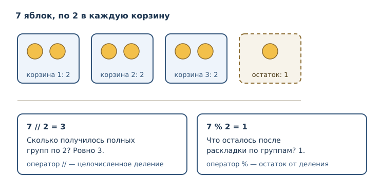
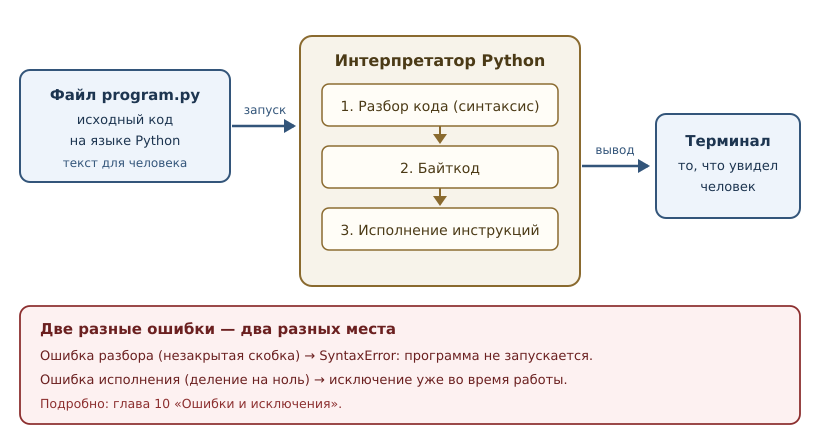

Первая программа: вычисления и вывод
Выражения, арифметика, строки, print и первые ошибки — на запускаемых примерах.
В этой главе
Программирование начинается не с синтаксиса, а с результата: вы пишете текст, интерпретатор его исполняет, вы видите, что получилось. В этой главе вы напишете и запустите свои первые программы, научитесь вычислять значения, выводить их на экран и понимать сообщения об ошибках. Все примеры в книге запускаются на Python 3.14 и проверяются автоматически, поэтому вы можете повторить каждый из них и получить ровно тот результат, который показан.
2.1 Что вы сможете после этой главы
- записывать вычисления и понимать, в каком порядке они выполняются;
- различать выражение и инструкцию;
- выводить значения в терминал и управлять форматом вывода;
- соединять строки и понимать, почему это работает не всегда;
- отличать синтаксическую ошибку от ошибки времени выполнения и читать соответствующие сообщения.
2.2 Программа, выражение и инструкция
Программа — это последовательность инструкций, которые интерпретатор исполняет сверху вниз, одна за другой. Самая маленькая единица вычисления — выражение: часть программы, которая вычисляется в значение.
2 + 3
Здесь 2 и 3 — операнды, а + — оператор. Всё вместе — выражение,
значение которого равно 5. Само по себе такое выражение в файле ничего не
покажет: его результат будет вычислен и отброшен. Чтобы результат стал виден,
нужна инструкция — единица исполнения, которая что-то делает: выводит
значение, связывает имя, повторяет блок кода.
Важное различие, к которому мы будем возвращаться:
| Понятие | Что это | Пример |
|---|---|---|
| выражение | вычисляется в значение | 2 + 3, "текст", 7 // 2 |
| инструкция | выполняется, не обязана давать значение | print(2 + 3), import os |
В Python грань не всегда заметна: print(2 + 3) — это инструкция-выражение,
внутри которой вычисляется выражение 2 + 3, а затем вызывается функция
print. Пока достаточно запомнить: выражение отвечает на вопрос «сколько?»,
инструкция — на вопрос «что сделать?».
2.3 Арифметические операторы
Python умеет вычислять арифметику так, как вы ожидаете, с одним важным
уточнением: привычный знак деления / всегда даёт число с плавающей точкой (float).
print(2 + 3)
print(10 - 4)
print(6 * 7)
print(7 / 2)
print(7 // 2)
print(7 % 2)
print(2 ** 10)
5
6
42
3.5
3
1
1024
Разберём операторы:
| Оператор | Название | Что делает | Пример |
|---|---|---|---|
+ |
сложение | сумма чисел или соединение строк | 2 + 3 → 5 |
- |
вычитание | разность | 10 - 4 → 6 |
* |
умножение | произведение | 6 * 7 → 42 |
/ |
деление | всегда число с плавающей точкой | 7 / 2 → 3.5 |
// |
целочисленное деление | сколько целых раз делитель помещается | 7 // 2 → 3 |
% |
остаток | что осталось после целочисленного деления | 7 % 2 → 1 |
** |
возведение в степень | левый операнд в степень правого | 2 ** 10 → 1024 |
Обратите внимание: 7 / 2 даёт 3.5, а не 3. В Python 3 деление всегда
возвращает число с плавающей точкой, даже если делится нацело: 10 / 2 равно
5.0. Если нужен именно целый результат, используйте //.
Целочисленное деление и остаток удобно представлять как раскладку предметов по корзинам.

Углубление: отрицательные числа
Для положительных чисел // и % интуитивны. С отрицательными всё
аккуратнее: целочисленное деление округляет результат вниз, к меньшему числу,
а остаток сохраняет знак делителя.
print(-7 // 2)
print(-7 % 2)
-4
1
Проверка: -4 * 2 + 1 = -7. Это правило языка Python, а не особенность
конкретной реализации. Подробнее о числах — в следующей главе.
2.4 print: как показать результат
print — встроенная функция, которая выводит значения в стандартный поток
вывода (обычно в терминал) и добавляет перевод строки. Ей можно передать
несколько значений через запятую: по умолчанию они разделяются пробелом.
print("Python", "3.14")
print("Python", "3.14", sep=" — ")
print("без перевода строки", end="")
print("— и вот продолжение")
Python 3.14
Python — 3.14
без перевода строки— и вот продолжение
Параметры sep и end управляют форматом:
sep— строка-разделитель между значениями (по умолчанию один пробел);end— строка, добавляемая после последнего значения (по умолчанию"\n").
Обратите внимание на третий пример: end="" убрал перевод строки, поэтому
следующий вывод продолжился в той же строке. Это стандартный приём, когда
нужно собрать вывод «в строчку».
2.5 Строки и их соединение
Строка — это текст в кавычках. Python принимает одинарные и двойные кавычки; главное — чтобы открывающая и закрывающая совпадали.
print("Python" + " " + "3.14")
print('одинарные кавычки тоже работают')
Python 3.14
одинарные кавычки тоже работают
Оператор + для строк означает конкатенацию (соединение строк): результат —
новая строка, составленная из двух.
Почему нельзя сложить строку и число
Интуитивно хочется написать "версия: " + 3.14, но Python откажется: строка
и число — значения разных типов, и правило «плюс» для них не определено.
print("версия: " + 3.14)
TypeError: can only concatenate str (not "float") to str
Сообщение говорит буквально: «можно соединять только str, а не float».
Правильный способ — привести число к строке. Это делается функцией str,
которую мы подробно разберём в главе 4, а пока запомните саму идею:
print("версия: " + str(3.14))
версия: 3.14
2.6 Комментарии
Комментарий начинается с символа # и продолжается до конца строки.
Интерпретатор его игнорирует: комментарии нужны людям.
# Это комментарий: чему посвящён расчёт
print(2 + 2) # комментарий может стоять и после кода
Хороший комментарий объясняет зачем, а не что: код уже показывает,
что происходит. Комментарий вроде # прибавляем 2 бесполезен; комментарий
# цена указана в копейках, поэтому делим на 100 — полезен.
2.7 Две категории ошибок
Ошибки — не признак того, что «не дано». Это информация: интерпретатор точно говорит, где и что не так. В самом начале важно различать два вида.
Синтаксическая ошибка (SyntaxError) возникает при разборе кода. Код не
соответствует грамматике языка, поэтому программа не запускается вовсе.
File "program.py", line 1
print("привет"
^
SyntaxError: '(' was never closed
Ошибка времени выполнения возникает, когда код синтаксически верен, но операция невозможна. Программа начинает исполняться и прерывается на проблемной инструкции.
print(10 / 0)
ZeroDivisionError: division by zero
print(10 // 0)
ZeroDivisionError: division by zero
Разница принципиальна: синтаксическую ошибку видно до запуска, и она всегда затрагивает весь файл. Ошибка времени выполнения зависит от данных: тот же код с другим делителем может сработать.
Текст сообщения зависит от версии Python: в 3.14 все операции деления на ноль
сообщают division by zero, а в версиях до 3.14 для // и % было
integer division or modulo by zero. Поэтому ориентируйтесь на тип
исключения (ZeroDivisionError), а не на текст сообщения: он может меняться
между версиями.
2.8 Как исполняется программа
Полезно представлять путь от текста до результата.

Три этапа объясняют поведение, которое вы уже наблюдали:
- Разбор. Интерпретатор проверяет синтаксис. Если текст не соответствует
грамматике, вы получаете
SyntaxErrorи программа не запускается. - Байткод. Код превращается во внутренние инструкции — байткод. Это деталь реализации CPython, о ней мы поговорим в главе 42.
- Исполнение. Интерпретатор выполняет инструкции сверху вниз. Именно на этом этапе возникают ошибки времени выполнения.
Из этого следует практическое правило: сообщение об ошибке читают сверху вниз, но самое важное обычно в конце — тип ошибки и её описание, а строки выше показывают, где это произошло.
2.9 Типичные ошибки начинающих
- Ждать целый результат от
/.10 / 2— это5.0, а не5. Используйте//, если нужен целый результат. - Соединять строку и число через
+. Нужна явная строка:str(число). - Забыть закрыть скобку или кавычку. Это
SyntaxError; редактор обычно подсказывает место. - Путать
=и==.=связывает имя со значением,==сравнивает. Сравнение появится в главе 4, но не перепутать их важно уже сейчас. - Игнорировать текст ошибки. В нём указаны и место, и причина; читать полезнее, чем сразу менять код наугад.
2.10 Упражнения
1. Арифметика вручную и на компьютере
Вычислите в уме, затем проверьте программой: 17 // 5, 17 % 5,
2 ** 8, 7 / 2. Объясните, почему результаты 17 // 5 и 17 % 5 связаны
равенством 17 = 5 * 3 + 2.
2. Прогнозирование вывода
Что выведет print(3, 4, sep="+")? А print(3, 4)? Запишите оба ответа,
затем проверьте.
3. Исправление синтаксической ошибки
Программа не запускается:
print("Python
Объясните, в чём ошибка, и напишите исправленный вариант.
4. Соединение строк
Напишите программу, которая выводит одну строку
Python — это язык, используя только строковые литералы и оператор +.
5. Целое или дробное
Почему print(10 / 2) выводит 5.0, а не 5? Как получить именно 5?
Ответьте текстом и подтвердите примером.
6. Три строки
Напишите программу, которая выводит три строки: название языка, версию и
девиз книги. Используйте три отдельных вызова print.
7. Ошибка времени выполнения
Следующий код падает:
print("итог: " + 42)
Определите тип ошибки, объясните причину и исправьте код двумя способами:
через str(...) и через sep у print.
8. Деление на ноль
Что произойдёт при выполнении print(5 // 0)? Какой тип исключения будет
поднят? Сравните с print(5 / 0): одинаково ли сообщение в Python 3.14 и как
оно менялось в версиях до 3.14?
9. Формат вывода
Напишите одну инструкцию print с тремя значениями — 2026, "Python",
"3.14" — так, чтобы вывод был ровно таким:
2026 | Python | 3.14
10. Мини-задача: стоимость заказа
Три товара стоят по 250 рублей. Скидка составляет 10 %. Напишите программу
из одной или нескольких инструкций print, которая вычисляет и выводит итог
в целых рублях, без переменных: используйте только числа и арифметические
операторы. Объясните, как вы получили целое число.
2.11 Проверка понимания
- Чем выражение отличается от инструкции? Приведите по два примера.
- Почему
7 / 2и7 // 2дают разные значения? Что означает каждое? - Что делает
sepи чем он отличается отend? - Почему
"текст" + 5— ошибка, а"текст" + str(5)— нет? - Чем
SyntaxErrorотличается отZeroDivisionErrorпо моменту возникновения и по последствиям? - На каком этапе исполнения появляется ошибка времени выполнения?
2.12 Что дальше
Вы научились вычислять и выводить, но пока не умеете хранить промежуточные результаты. В следующей главе появятся имена, объекты и типы — механизм, который превращает отдельные вычисления в настоящую программу.